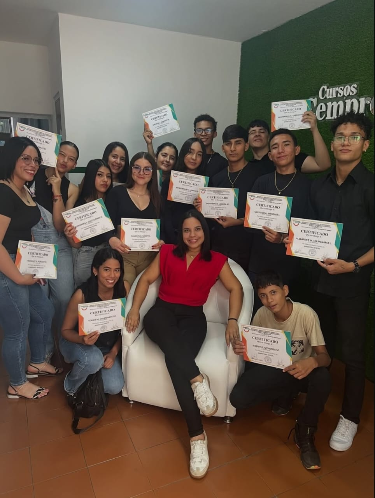

Educación técnica accesible que transforma vidas desde 2011
Preparamos a jóvenes y adultos con competencias reales en oficios y tecnologías emergentes.
Nuestra propuesta une teoría y práctica para mejorar la calidad de vida y el desarrollo
local.

Misión
Brindar formación complementaria, accesible e innovadora que potencie habilidades personales y profesionales para la inserción laboral y el emprendimiento.
Visión
Consolidarnos como institución líder en formación integral, reconocida por su excelencia académica y compromiso con el desarrollo socioeconómico regional.
Nuestra historia
2011 — Fundación
Nacemos como Centro de Formación para el Trabajo para ofrecer cursos teórico-prácticos adaptados al mercado laboral.
Crecimiento
Ampliamos presencia con múltiples sedes y una oferta creciente de programas cortos y certificables.
Actualidad
Bajo la dirección de la Prof. Johanna Izquiel, reforzamos alianzas productivas y el impacto social de la formación técnica.
Impacto en la comunidad
Con un modelo de bajo costo y acceso cercano, reducimos barreras económicas y habilitamos trayectorias laborales reales. Egresados crean emprendimientos que dinamizan la economía local y elevan la empleabilidad.
“La presencia digital de instituciones educativas fortalece su credibilidad y facilita la interacción con los usuarios.”
Áreas de formación
Más de cinco ejes que agrupan una veintena de programas con certificación y competencias laborales reales.
Belleza y Estética
- Barbería
- Peluquería
- Cosmetología
Oficios Técnicos
- Refrigeración
- Herrería
- Electrónica
Industria Automotriz
- Mecánica de motos
- Refrigeración vehicular
Artes Culinarias
- Panadería
- Repostería
- Decoración
Tecnologías Digitales
- Marketing digital
- Redes sociales
- Diseño gráfico
¿Por qué CEMPROZA?
- Programas cortos con certificación.
- Docentes con experiencia práctica.
- Equipos y metodologías actualizadas.
- Enfoque laboral y de emprendimiento.